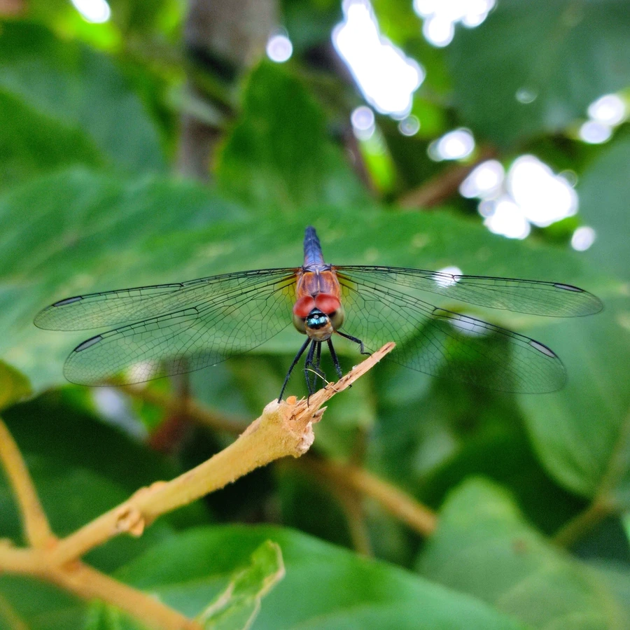

昆虫 · 动物界
蓝额疏脉蜻 Brachydiplax chalybea

体型小巧、雄虫面部和胸部呈蓝灰色的蜻科昆虫，腹部黑色，常在南方水草丰茂的池塘和湿地边活动。
- 分类
- 门节肢动物门纲昆虫纲目蜻蜓目科蜻科属疏脉蜻属
- 栖息环境
- 水草丰茂的池塘、沼泽和湿地，静水环境
- 地理分布
- 东亚和东南亚，中国南方常见
- 保护级别
- 暂无评估
物种志
蓝额疏脉蜻成虫体长 30–35 mm，翅展 55–65 mm。雄虫面部和胸部呈蓝灰色，像戴着一张金属面具，腹部黑色，翅透明，翅基部有小小的褐斑；雌虫体色黄褐，斑纹较素。
蓝额疏脉蜻分布于东亚和东南亚，中国南方常见，栖息于池塘、沼泽和湿地，喜欢水草丰茂的静水环境。雄虫常停在水草的尖端守望领地，驱逐进入领地的其他雄虫；成虫捕食蚊、蝇等小飞虫。稚虫水生，生活在浅水草丛中，捕食水中的小型动物。它的体型小巧，停在水草尖上时很容易被忽略，但仔细观察会发现雄虫的蓝灰色面部在阳光下非常醒目。目前它没有IUCN 的正式评估，中国未将其列入国家重点保护野生动物名录。
形态与习性
- 食性成虫捕食蚊、蝇等小飞虫，稚虫捕食水中小动物
- 体长30–35 mm，翅展 55–65 mm
- 雄虫体色面部和胸部蓝灰色，腹部黑色
- 栖息地水草丰茂的池塘、沼泽和湿地
- 领地行为雄虫停在水草尖端守望领地
- 稚虫水生，生活在浅水草丛中
趣味知识
- 蓝额疏脉蜻的雄虫面部呈蓝灰色，像戴了一张金属面具。
- 它的体型小巧，常停在水草的尖端，很容易被忽略。
- 水草丰茂的池塘是它最主要的栖息地。